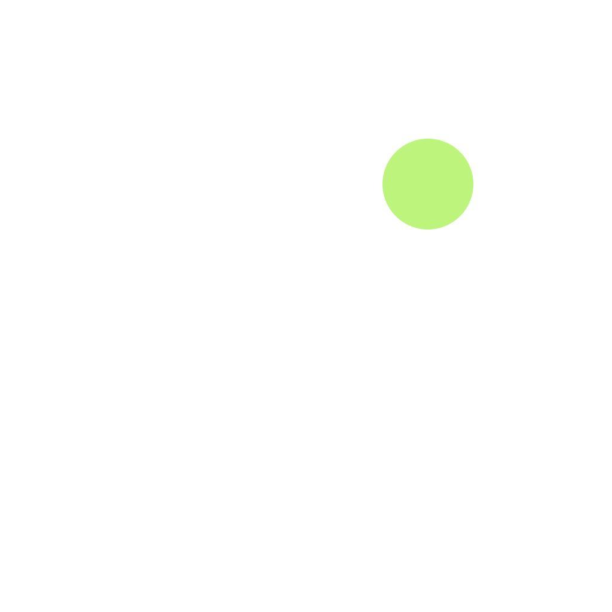

Original editable starter. Approximate shape previews—not Apple's Figma template or an Icon Composer rendering.

Edit the SVGs, then generate an iOS asset catalog using the README command. For native layered iOS/iPadOS/watchOS icons, import foreground layers into Icon Composer, configure appearances and validate in Xcode. The Mono study is fixed grayscale artwork, not system tint behavior.
Template instructions